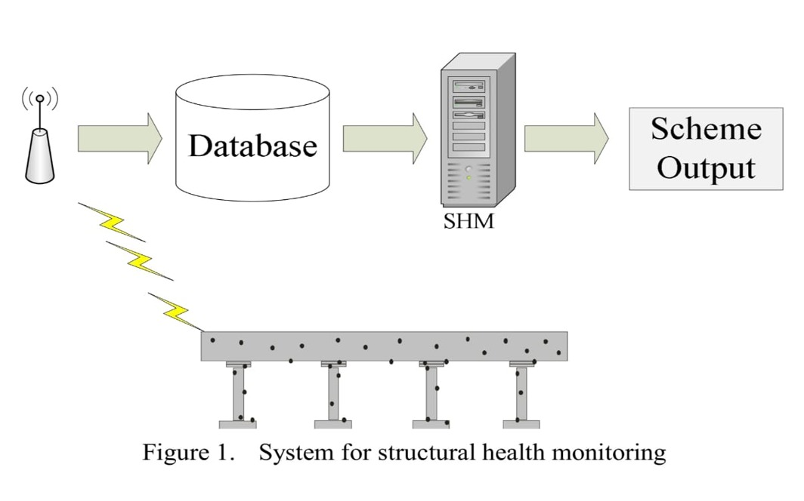
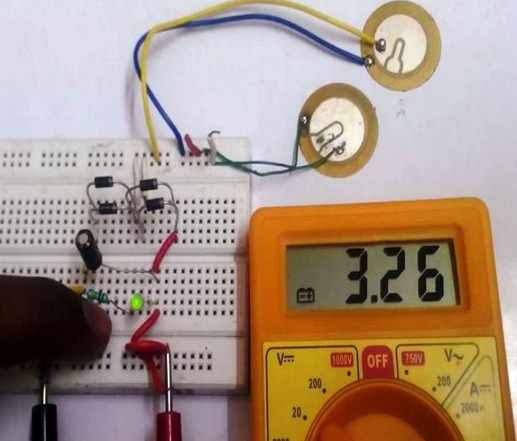
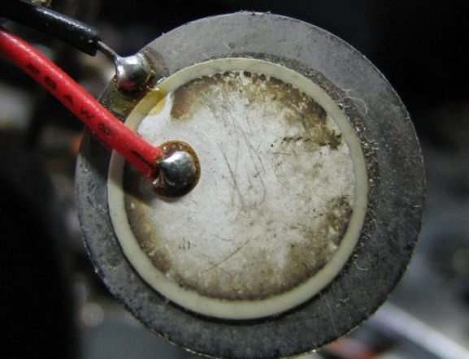
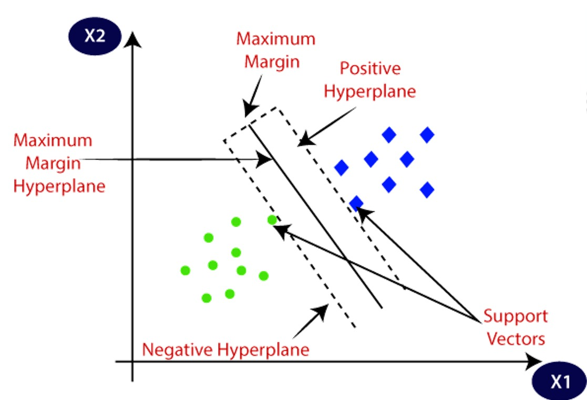
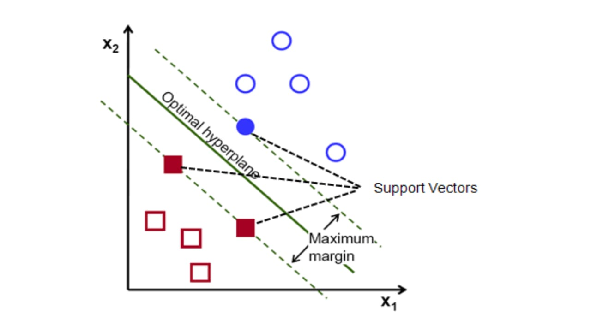
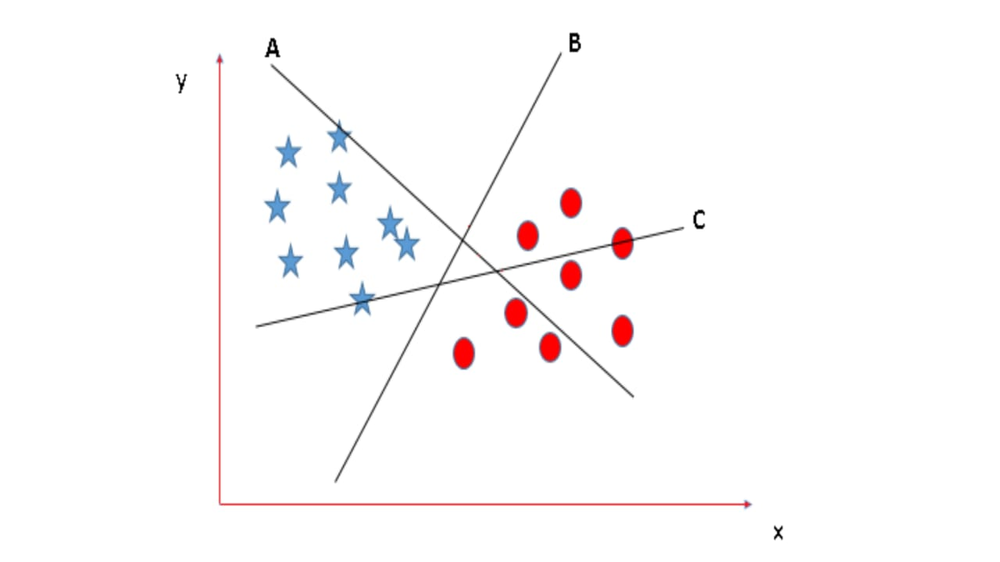
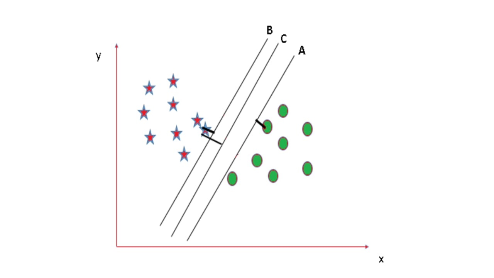

How is product possible ?
Every structure in the absence of any driving or damping force tends to oscillate and
vibrate in a particular frequency also called as Natural frequency of the structure.
It has been shown, by analysing two-year-long continuous records from the Caltech’s
Millikan Library, (Clinton et al. 2004).
Natural frequencies of a structure(building) can change significantly after an extreme
event, such as an earthquake or due to environmental factors such as rainfall, wind speed, temperature and aging
, and therefore can be strongly related to change in
natural frequencies of a building and hence to the damages in the structures.
This makes it crucial that the modal properties like natural frequencies are accurately
estimated and continuously tracked to detect any changes by the Structural Health Monitoring (SHM) system.

Advancements in sensor technologies such as piezoelectric sensors not only
improves the accuracy of sensing data but also have enabled economically affordable
sensor installations for long-term monitoring of civil engineering structures. Therefore,
now we can install hundreds to thousands of sensors to collect valuable data about the
structure.


To classify the huge amount of data into healthy and unhealthy status we use the
techniques and algorithms of machine learning.
Machine learning in the context of SHM can be described as the task of generating
knowledge from past experiences (or, more precisely, from collected sensor data),
focusing on the prediction of new sensor data. A variety of machine learning
techniques has been proposed in structural health monitoring (SHM) systems. In which
we have taken the support of Support Vector Machine to solve our purpose.
Support Vector Machines (SVM) are a particular classification strategy. It mainly
works by transforming the training dataset into a higher dimension, which is then
inspected for the optimal separation boundary. In SVMs, these boundaries are referred
to as hyperplanes, which are identified by locating support vectors, and their
margins, which are the lines parallel to the hyperplane defined by the shortest distance
between a hyperplane and its support vectors. SVMs are able to classify both linear
and nonlinear data.
Since vibration frequencies of architectural or mechanical structures imply their health
status, we plot vibration frequency data collected by sensors, and after training the
SVM model to classify data into the healthy and unhealthy status, the data coming from
sensors are tested and classified into a certain category which indicates health status
of monitoring structure.

Our system is driven by SVM Algorithm !
A Support Vector Machine is yet another supervised machine learning algorithm. It can
be used for both regression and classification purposes. But SVMs are more commonly
used in classification problems.
Support Vectors are the data points nearest to the hyperplane, the points of our data set
which if removed, would alter the position of the dividing hyperplane. As we can see that
there can be many hyperplanes which can segregate the two classes, the hyperplane
that we would choose is the one with the highest margin.
GRAPH : ONLY TO THOSE WHICH HAS LARGE MARGIN /SPACE

GRAPH : IN THIS WE WILL SELECT TO THOSE WHICH HAS LARGE MARGIN

GRAPH : THAT IS C WHICH IS BEST FOR SEPARATING THESE TWO DATA

We are not always lucky to have a dataset which is linearly separable by a hyperplane.
Fortunately, SVM is capable of fitting non-linear boundaries using a simple and elegant
method known as kernel trick.
In simple words, it projects the data into higher dimension where it can be separated by
a hyperplane and then project back to lower dimension